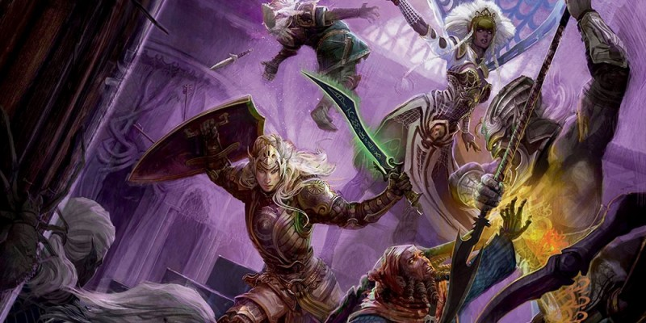

Sage Advice : Combat
L'effet de surprise peut-il se produire en dehors de l'ordre de l'initiative, comme un round de surprise ?
Non, et voici comment fonctionne la surprise. La première étape de tout combat est la suivante : le MD détermine si quelqu'un dans le combat est surpris (relire "Le combat pas à pas" à la page 189 du Manuel des Joueurs). Cette détermination ne se produit qu'une seule fois lors d'un combat, et uniquement au début. En d'autres termes, une fois qu'un combat commence, vous ne pouvez pas être à nouveau surpris, même si un ennemi caché peut encore gagner les avantages d'être invisible (voir "Attaquants et cibles invisibles" à la page 194 du Manuel des Joueurs). Pour être surpris, vous devez être pris au dépourvu, généralement parce que vous n'avez pas remarqué des ennemis discrets ou parce que vous avez été surpris par un ennemi avec une capacité spéciale, comme trait Transparent du cube gélatineux, qui le rend exceptionnellement surprenant. Vous pouvez être surpris même si vos compagnons ne le sont pas, et vous n'êtes pas surpris si un seul de vos ennemis ne parvient pas à vous prendre au dépourvu. Si quelqu'un est surpris, aucune action n'est encore prise. Tout d'abord, l'initiative est lancée normalement. Puis le premier round de combat commence, et les combattants non surpris agissent selon l'ordre d'initiative. Une créature surprise ne peut pas se déplacer ni prendre une action ou une réaction jusqu'à ce que son premier tour se termine (rappelez-vous qu'être incapable de prendre une action signifie aussi ne pas pouvoir prendre d'action bonus). En effet, une créature surprise saute son premier tour dans un combat. Une fois que ce tour se termine, la créature n'est plus surprise.
En bref, l'activité dans un combat est toujours ordonnée par l'initiative, que l'on soit ou non surpris, et une fois le premier tour passé, la surprise n'est plus un facteur. Vous pouvez toujours essayer de vous cacher de vos ennemis et d'acquérir les avantages conférés par le fait d'être caché, mais dans ce cas vous ne privez pas vos ennemis de leur tour.
Les règles de surprise fonctionnent lorsque deux camps s'opposent. Que se passe-t-il si un troisième groupe de combattants, caché des autres, intervient après ?
La règle de surprise ne vaut qu'au début d'un combat. Les embuscades qui ont lieu pendant le combat utilisent les règles des jets de Dextérité (Discrétion).
Si un magicien lance boule de feu pendant un round de surprise, est-ce que les ennemis ont un désavantage à leurs jets de sauvegarde ?
Le fait d’être surpris n’affecte pas les jets de sauvegarde. Quand vous êtes surpris, vous ne pouvez ni vous déplacer, ni effectuer d’action lors de votre premier tour de combat, ni entreprendre de réaction avant la fin de ce tour (PH p.189).
Peut-on retarder son tour et le prendre plus tard dans le round ?
Non. Lorsque c'est votre tour, soit vous faites quelque chose, soit vous ne faites rien. Si vous ne voulez pas faire quelque chose, pensez à prendre l'action Esquiver de sorte d'avoir, au moins, une protection supplémentaire. Si vous voulez attendre pour agir en réponse à quelque chose, prenez l'action Se tenir prêt, ce qui vous permet de prendre une partie de votre tour plus tard. Pour plusieurs raisons, nous n'avons pas retenu l'option de pouvoir retarder son tour :
- Votre tour implique plusieurs décisions, comme celle de choisir où vous vous déplacez et l'action que vous effectuez. Si vous pouviez retarder votre tour, votre prise de décision serait plus lente, puisque vous auriez en plus à vous demander si vous voulez prendre votre tour ou non. Multipliez cette analyse extra par le nombre de personnages et de monstres dans un combat, et vous obtenez potentiellement un ralentissement du jeu.
- La capacité de retarder votre tour peut faire perdre son sens à l'initiative, car les personnages et les monstres s'organisent suivant l'ordre d'initiative. Si des combattants peuvent changer leur place dans l'ordre d'initiative à volonté, pourquoi utiliser l'initiative ? De plus, changer l'initiative peut facilement se transformer en une corvée désagréable, surtout pour le MD, qui pourrait avoir à modifier la liste de l'initiative à plusieurs reprises lors d'un combat.
- Être capable de retarder votre tour pourrait faire des ravages au niveau de la durée des sorts et d'autres effets, en particulier pour ceux qui durent jusqu'à votre prochain tour. En changeant simplement le moment auquel votre tour arrive, vous pourriez changer la durée de certains sorts. Pour se prémunir de tels abus il faudrait alors créer un ensemble de règles supplémentaires pour limiter la capacité à changer les durées. Première conséquence de cela ? Plus de complexité pour le jeu, ce qui signifie une plus grande probabilité de ralentir le jeu.
Deux de nos objectifs pour le combat étaient qu'il soit rapide et que l'initiative soit importante. Nous ne voulions pas commencer chaque combat par un jet d'initiative puis qu'ensuite l'ordre du tour soit remis en cause par une option de retard. En outre, nous estimons que jouer avec l'initiative ne devrait pas être un point important d'une bataille. Ce sont les actions dramatiques des combattants qui doivent être la priorité, avec des tours qui doivent se passer aussi rapidement que possible. De plus, plus vite votre tour se termine, plus vite vous pourrez jouer votre prochain tour.
Si on prend l'action Se tenir prêt, peut-on l'arrêter pour effectuer une attaque d'opportunité ? Ou cette action se maintient-elle pour l’intégralité du tour ?
Vous pouvez effectuer une attaque d’opportunité après avoir pris l'action Se tenir prêt, mais cela met fin à l'action.
Une action bonus peut-elle être utilisée en tant qu'action et vice-versa ? Par exemple, un barde peut-il utiliser son action bonus pour accorder un dé d'Inspiration bardique et une action pour lancer le sort mot de guérison ?
Non. Les actions et les actions bonus ne sont pas interchangeable. Dans l'exemple, le barde peut utiliser l'Inspiration bardique ou le mot de guérison durant son tour, mais pas les deux.
Une créature ne possédant pas la capacité Vol stationnaire peut-elle se maintenir en l’air sans se déplacer ou doit-elle bouger à chaque round ?
Une créature volante ne possédant pas la capacité Vol stationnaire peut se maintenir en l'air sans bouger à chaque round.
Est-il possible de traverser l’espace occupé par un ennemi à terre ?
L'état à terre ne contredit pas la règle qui interdit de traverser un espace occupé par un ennemi, sauf si cet ennemi possède deux catégories de taille de différence (en plus ou en moins) par rapport à vous. Si vous traversez l’emplacement occupé par une autre créature, qu’elle soit amie ou ennemie, cet emplacement est un terrain difficile pour vous et vous ne pouvez pas choisir d'y terminer volontairement votre déplacement (PH p.190 à 192 pour plus de précision sur le déplacement en combat).
Est-ce que la vitesse de voyage s’applique aussi en combat ou n’est-elle utilisée que pour les voyages ?
Les règles de vitesses de voyages (PH p.181 et 182) ne s’appliquent pas en combat.
Si l'on possède une capacité comme Ruse ou Pas aérien, peut-on prendre l'action Foncer plus d'une fois pendant son tour ?
Si une action bonus vous permet de prendre l'action Foncer, rien dans les règles ne vous empêche de prendre également l'action Foncer en tant qu'action normale. Le même principe vaut lorsque vous utilisez la capacité Fougue ; vous pouvez utiliser vos deux actions pour prendre l'action Foncer.
Mon roublard/magicien peut avoir une action bonus pour Foncer en utilisant Ruse, et peut lancer le sort repli expéditif sur lui-même pour avoir une action bonus pour Foncer. Peut-on avoir deux actions bonus pour Foncer ?
Non. Vous ne pouvez utiliser qu'une seule action bonus à votre tour (PH p.189). Si vous avez plusieurs possibilités d'utiliser une action bonus, vous devez en choisir une seule et l'utiliser pendant votre tour.
Si on utilise l'action Aider pour distraire un ennemi, doit-on rester dans un rayon de 1,50 mètre autour de celui-ci pour que l'action fonctionne ?
Non, vous pouvez effectuer l'action puis vous éloigner. L'action elle-même est ce qui confère un avantage à votre allié, pas le fait de rester aux côtés de l'ennemi.
Si l'on est invisible et que l'on décoche une flèche à une cible, se cacher est-il une nouvelle action?
Sans une capacité spéciale, se cacher en combat nécessite l'action Se cacher.
Si on utilise l'action Se tenir prêt pour infliger des dégâts à quelqu'un qui bouge, prive-t-on la cible du reste de son mouvement?
Infliger des dommages à une cible en mouvement n'arrête pas son mouvement, à moins que les dégâts ne soient accompagnés d'une capacité qui empêche le mouvement. Des choses comme le don Sentinelle octroie une telle capacité. Réduire une créature en mouvement à 0 point de vie est également généralement un moyen efficace de l'arrêter !
Est-il possible d'utiliser l'action Se tenir prêt pour utiliser l'action Foncer durant le tour de quelqu'un d'autre, puis combiner cela avec le don Expert de la charge ?
Non, car vous ne pouvez pas utiliser d'action bonus durant le tour de quelqu'un d'autre.
Que ce soit pour lancer un sort ou une autre action, est-il nécessaire que la cible soit à portée pour Se tenir prêt ?
La cible doit être à portée au moment où vous déclenchez l’action, pas quand vous la préparez.
Comment fonctionne Se tenir prêt avec un sort ? L’emplacement de sort est-il perdu si les conditions de déclenchement ne se réalisent jamais ?
Un sort tenu en préparation consomme un emplacement de sort, même si vous n'utilisez par votre réaction pour le libérer avant le début de votre prochain tour.
Une action préparée peut-elle se déclencher pendant le tour d'un adversaire, par exemple, entre la première et la seconde attaque d'une attaque multiple ?
Une action préparée est résolue immédiatement après avoir été déclenchée. Si vous avez défini le déclencheur comme étant une attaque, elle intervient juste après cette attaque (et donc avant l'attaque suivante).
Comment savoir quel modificateur de caractéristique utiliser avec un jet d'attaque et son jet de dégâts ?
Le Manuel des Joueurs spécifie quel modificateur de caractéristique utiliser pour un jet d'attaque (p. 194) et le jet de dégâts (p. 196) correspondant. Voici un résumé :
| Type d'attaque | Jet d'attaque | Jet de dégâts |
| Attaque au corps à corps | Mod. de Force (1) | Mod. de Force |
| Attaque à distance | Mod. de Dextérité (1) | Mod. de Dextérité |
| Attaque avec un sort | Mod. de la carac pour lancer des sorts (2) | Dépend de l'effet |
(1) Ajoutez votre bonus de maîtrise si vous utilisez une arme que vous maîtrisez.
(2) Ajoutez votre bonus de maîtrise. Votre caractéristique d'incantation est définie par votre classe ou par la capacité qui vous octroie la possibilité de faire une attaque avec un sort.
Par exemple, si vous faites une attaque au corps à corps avec épée longue, vous ajoutez votre modificateur de Force à l'attaque et aux dégâts. En revanche, si vous utilisez l'attaque du sort mineur trait de feu, vous ajoutez votre modificateur de caractéristique d'incantation au jet d'attaque. Si vous êtes un magicien, l'Intelligence est votre caractéristique d'incantation, il faut donc ajouter votre modificateur d'Intelligence. Toutefois, trait de feu n'indique pas d'ajouter votre modificateur au jet de dégâts, donc il ne faut pas le faire.
Diverses capacités dans le jeu font des exceptions explicites à la règle. Par exemple, une arme qui a la propriété finesse vous permet de choisir si vous souhaitez utiliser votre modificateur de Force ou de Dextérité en l'utilisant. Autre exemple : lorsque vous utilisez l'option de combat à deux armes du Manuel des Joueurs (p. 195), vous n'ajoutez pas votre modificateur de caractéristique aux dommages de l'attaque supplémentaire, à moins que ce modificateur ne soit négatif. Vous pouvez par contre ajouter votre modificateur de caractéristique au jet d'attaque, puisque l'option ne dit pas le contraire. En d'autres termes, vous suivez la règle générale jusqu'à ce qu'une exception dans le jeu vous dise le contraire.
Qu'en est-il des cas spéciaux comme le sort green-flame blade ? Le sort, qui apparaît dans le Sword Coast Adventurer’s Guide, vous dit de faire une attaque au corps à corps avec une arme. Si vous regardez le tableau ci-dessus, vous verrez que dans des circonstances normales vous utilisez votre modificateur de Force lorsque vous effectuez une attaque au corps à corps avec une arme. Cela n'a pas d'importance qu'un sort vous dise d'attaquer. Si un sort prévoit que vous effectuiez une attaque avec un sort, la description du sort l'indiquera. Jetez un œil à trait de feu et à rayon de givre. Les deux indiquent « attaque avec un sort ».
Que signifie "melee weapon attack" ? Une attaque au corps à corps avec une arme ou une attaque avec une arme de corps à corps ?
Cela signifie une attaque au corps à corps avec une arme. De même, "ranged weapon attack" signifie une attaque à distance avec une arme. Certaines attaques comptent comme une attaque au corps à corps ou de distance avec une arme, même si aucune arme n'est impliquée, comme spécifié dans le texte de ces attaques. Par exemple, une attaque à mains nues compte comme une attaque au corps à corps avec une arme, alors que le corps de l'attaquant n'est pas considéré comme étant une arme. Méticuleusement parlant, on aurait écrit "melee-weapon attack" si on avait voulu dire une attaque avec une arme de corps à corps.
Comment les armes à allonge fonctionnent-elles avec les attaques d'opportunité ?
Une attaque d'opportunité est déclenchée lorsqu'une créature que vous pouvez voir se déplace au-delà de votre allonge (PH p.195). Si vous voulez faire une attaque d'opportunité avec une arme à allonge, comme une hallebarde, vous pouvez le faire lorsqu'une créature quitte l'allonge que vous possédez avec cette arme. Par exemple, si vous utilisez une hallebarde, une créature juste à coté de vous peut s'éloigner de 1,50 mètre sans déclencher d'attaque d'opportunité. Si cette créature essaye de se déplacer de 1,50 mètre supplémentaire (donc au-delà de votre allonge de 3 mètres) elle déclenche alors une attaque d'opportunité.
Une créature aveugle peut-elle effectuer une attaque d’opportunité ?
Une attaque d’opportunité est déclenchée par « une créature hostile que vous pouvez voir » (PH p.195). Si vous ne voyez pas votre ennemi, vous ne pouvez pas faire d'attaque d’opportunité.
Est-il possible de Lutter ou de Bousculer dans le cadre d’une attaque d’opportunité ?
Lutter et Bousculer sont des options de l'action Attaquer (PH p.195), pas de l'attaque d’opportunité. Vous devez utiliser Se tenir prêt si vous voulez pouvoir Lutter ou Bousculer à un autre moment que pendant votre tour.
Lorsqu'on utilise le combat à deux armes, peut-on dégainer et lancer deux armes à son tour ?
Vous pouvez lancer deux armes avec le combat à deux armes (PH p.195), mais cette règle ne vous donne pas la possibilité de dégainer deux armes gratuitement. A votre tour, vous ne pouvez interagir qu'avec un seul objet gratuitement, durant votre mouvement ou lors d'une action (PH p.190). Une des interactions les plus courantes avec un objet est de dégainer ou rengainer une arme. Interagir avec un second objet durant le même tour exige une action. Vous avez besoin d'une capacité comme le don Combattant à deux armes pour pouvoir dégainer ou rengainer une deuxième arme gratuitement.
En utilisant le combat à deux armes, peut-on utiliser ses deux attaques (action normale et action bonus) pour bousculer une créature ?
Non. Le combat à deux armes (PH p.195) ne permet pas de faire une attaque bonus, à moins que la première attaque ne soit faite avec une arme de corps à corps légère. Bousculer une créature est une attaque de corps à corps spéciale qui ne demande pas d'utiliser une arme.
Une créature agrippée peut-elle encore attaquer et utiliser ses capacités spéciales ?
L'état agrippé limite le mouvement, pas les attaques, la magie ou autre. Cela dit, de nombreuses capacités pour agripper, telles que l'attaque de filament d'un enlaceur, fournissent des effets semblables à l'état entravé.
La règle de lutte du Manuel des Joueurs est-elle utilisable par une créature qui ne possède pas de mains ?
La règle de lutte (PH p.195) a été écrite pour un lutteur avec au moins une main, mais un MD peut facilement adapter cette règle pour une créature sans mains qui possède une morsure ou un appendice, comme un tentacule, qui pourrait raisonnablement saisir quelqu'un. Un loup, par exemple, peut raisonnablement essayer de saisir une personne avec sa morsure, mais l'animal ne serait alors pas en mesure d'utiliser son attaque de morsure tant qu'il retient la personne. Gardez à l'esprit que la règle de lutte dans le Manuel des Joueurs nécessite l'action Attaquer, alors une créature doit prendre cette action (plutôt que Attaques multiples ou une autre action du bloc de stat de la créature) quand elle utilise cette règle. Un monstre, comme un enlaceur, qui a une attaque de lutte spéciale, ne suit pas cette règle lorsque qu'il utilise son attaque spéciale.
Est-ce qu’une action de Lutte ou de Bousculade déclenche la capacité de clerc Fureur de l'ouragan ou la Riposte d’un maître de guerre ?
La réponse à ces deux questions est non. Les options Lutter et Bousculer (PH p.195) n'engendrent pas de résultat touché ou raté.
Disons que j'agrippe et que je me jette à terre. Ma cible est-elle aussi à terre ?
Non. Une créature que vous agrippez n'est pas mise à terre si vous vous jetez à terre. Vous maintenez votre prise sur la créature tout en étant au sol.
Une cible à distance, engagée au corps à corps, bénéficie-t-elle d’un abri ou l’attaquant a-t-il un désavantage ?
La cible bénéficie d'un abri partiel (50%) si une autre créature se trouve entre l'attaquant et elle (PH p.196).
Est-ce que la résistance ou une autre forme de réduction de dégâts peut réduire des dommages à 0 ?
Il n’y a pas de règles de dégâts minimum. Il est tout à fait possible que des dommages soient réduits à 0 du fait d’une attaque, d’un sort ou d’un autre effet.
Un dragon utilise son souffle de combat contre moi. Je réussis le jet de sauvegarde et j'ai la résistance aux dégâts. Est-ce que je ne prends que le quart des dégâts de l'attaque ?
Oui, car la résistance s'applique après tous les autres modificateurs aux dommages (PH p.197). Si vous réussissez un jet de sauvegarde et subissez tout de même des dégâts, ceux-ci sont divisés par deux si vous avez la bonne résistance.
L'idée est-elle que seules les attaques au corps à corps avec une arme puissent assommer des adversaires, ou les attaques au corps à corps avec un sort le peuvent-elles également ?
Si vous réduisez une créature à 0 point de vie avec une attaque au corps à corps, vous pouvez assommer la créature (PH p.198). Et cette attaque au corps à corps ne se limite pas aux armes. Même les attaques au corps à corps avec un sort peuvent être utilisées pour assommer une créature.
Une attaque avec un filet est-elle toujours faite avec un désavantage ?
À moins de posséder une capacité qui contredise cela, toute attaque avec un filet se fait avec un désavantage. Soit parce que vous attaquez à 1,50 m de votre cible (PH p.149), soit parce que vous êtes à longue portée, c’est-à-dire entre 1,50 m et 4,50 m pour un filet.
Un personnage qui n'est pas maître de guerre (guerrier) peut-il tenter de désarmer quelqu'un ?
Le désarmement est une manœuvre conçue pour l'archétype maître de guerre, mais tout le monde peut tenter de désarmer une adversaire. L'action optionnelle Désarmer (DMG p.271) propose une solution pour qu'un MD puisse gérer cette action.
Les armes naturelles sont-elles considérées comme des armes ?
Les choses désignées comme des armes par les règles, y compris les armes naturelles, sont en effet des armes. En revanche, les attaques à mains nues ne sont pas des armes. C'est quelque chose que vous faites avec une partie de votre corps qui n'a pas d'armes.
Peut-on attaquer avec une arme, puis dégainer une deuxième arme avec son autre main et réaliser une attaque avec deux armes ?
Pour utiliser l'action bonus combat à deux armes (PH, 195), vous devez avoir les deux armes en main lorsque vous effectuez la première attaque. Par contre, si vous vous battez avec deux armes ou plus dans le cadre de la capacité Attaque supplémentaire, la règle de l'action bonus combat à deux armes ne s'applique pas. La règle de cette action bonus ne s'applique qu'à elle-même, pas à toute autre utilisation de deux armes ou plus dans le jeu.

Traduction du Sage Advice Compendium v2.5